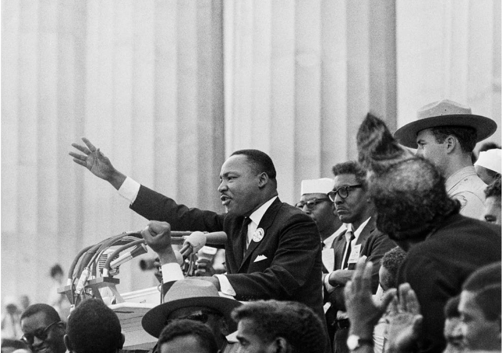
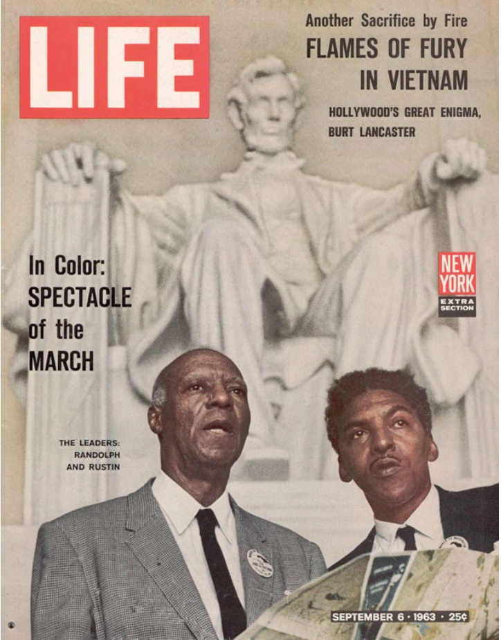

Rustin began mentoring Martin Luther King, Jr., about nonviolence and community organizing very soon after the Montgomery Bus Boycott began. But he kept short his first visit to Montgomery; Rustin’s personal history was seen as a threat to King’s efforts and he was encouraged to leave within a week of arriving. This became the recurring dynamic between Rustin and King: Rustin worked behind the scenes to support King and the larger civil rights movement. For instance, Rustin stayed at his home in New York, but he kept national press attention focused on Montgomery. He also organized a massive New York fundraiser for the boycott that featured Adam Clayton Powell and Eleanor Roosevelt. In addition, he helped establish the Southern Christian Leadership Conference (SCLC), the organization that King headed. In this 1986 interview with Peg Byron, Bayard Rustin discussed how rumors about his sexuality affected his work with King. The interview appeared in the Washington Blade, a weekly gay newspaper for the Washington, D.C., area, and was later published in full by Eric Marcus for makinggayhistory.com.
BR: I don’t know if you know, but I was an associate of Dr. Martin Luther King’s for a number of years. And that actually I’m the person who drew up the plans for his Southern Christian Leadership Conference. At a given point, there was so much pressure on Dr. King about my being gay and particularly because I would not deny it, that he set up a committee to explore whether it would be dangerous for me to continue working with him. And after eight years that committee came to the decision it would be dangerous.
PB: Wait, the committee met for eight years?
BR: No, he set . . . After I had worked for him for eight years . . . J. Edgar Hoover began to circulate all kinds of stories about Martin Luther King, one of which was that he was a friend of mine, hinting that somehow or other there might be some homosexual relationship going on between us. This frightened a number of the people in Martin Luther King’s movement, and they set up a committee to discover what they should do about it. And that committee asked me to leave.
PB: When was that?
BR: That was around 1962. And, naturally, I took the position that if people feel that I am a danger to some important movement, I would leave. But the thing which distressed me was that if . . . if Martin had taken the strong stand then that he took a year later, in ’63, vis-àvis Strom Thurmond, he could have overcome it and kept me. But I understand his doing it, and I hold no grief with him about having done it. I just wish that he had shown the strength in ’62 that he showed when he backed me completely in ’63....
Citation: Peg Byron, “Interview with Bayard Rustin,” February 5, 1986, Courtesy of the Estate of Bayard Rustin.
This photograph by Bob Adelman captured King, mid-speech, as he delivered his celebrated “I Have a Dream” speech from the steps of the Lincoln Memorial at the 1963 March on Washington. The photograph cemented the significance of the day as related to King’s speech; however, the rally at the memorial was the culmination of several months of organizational work that Rustin did to gather Americans from around the country in unprecedented fashion. Rustin appears (wearing glasses) just behind King.
Citation: Bob Adelman, “Martin Luther King Delivers the ‘I Have a Dream’ Speech,” August 28, 1963, Prints and Photographs Division, Library of Congress.
This New York Times article describes how Senator Strom Thurmond of North Carolina tried to interfere with the plans for the March on Washington by denouncing Bayard Rustin as a former Communist and a gay man, making his arrest report a permanent part of the Congressional record. It shares, as well, the support Rustin received from King and A. Philip Randolph.
Bayard Rustin, organizer and operations chief for the March on Washington, Aug. 28, denied yesterday Senator Strom Thurmond’s charge that he had been a member of the Communist party. Senator Thurmond made his charges against Mr. Rustin in the Senate last Tuesday. He also read police records into The Congressional Record...
Statement on Character: Mr. Rustin, a 53-year-old Negro, refused to deal with Senator Thurmond’s accusation that he had been sentenced on a morals charge in 1953 and that he had subsequently been arrested for vagrancy and lewdness.
“An individual involved in a character charge cannot deal with it himself,” he said. “This must be done by my peers who as you know are the Christian ministers of the Negro communities and the civil rights leaders. They have the responsibility for the moral and Christian leadership of the Negro people. Character is a matter of judgement within the context of a whole life. It is for my peers to judge me and my life.”
An aide who was present at the conversation with Mr. Rustin said that the Negro ministry felt that Mr. Rustin had redeemed himself many times with his record of achievement. Dr. King rallied to Mr. Rustin’s support yesterday and praised his abilities and achievements. Mr. Rustin was secretary to Dr. King from 1955 to 1960.
Mr. Randolph also issued a statement giving support to Mr. Rustin.
“I am sure I speak for the combined Negro leadership in voicing my complete confidence in Bayard Rustin’s character, integrity and extraordinary ability,” he said. “Twenty-two arrests in the fight for civil rights attest, in my mind, to Mr. Rustin’s dedication to high human ideals.
“That Mr. Rustin was on one occasion arrested in another connection has long been a matter of public record, and not an object of concealment. There are those who contend that this incident, which took place many years ago, voids or overwhelms Mr. Rustin’s ongoing contribution to the struggle for human rights. I hold otherwise.”
Citation: M.S. Handler, “Negro Rally Aide Rebuts Senator.” The New York Times, August 16, 1963.
On September 6, 1963, LIFE Magazine placed A. Philip Randolph and Bayard Rustin on the cover of their issue celebrating the previous month’s March on Washington. Randolph, a labor leader, was a mentor to Rustin since the 1940s and had proposed such a march in 1941, as a mobilization of African American power. Rustin brought that promise to reality: he organized the bus routes and the schedule, the food and the port-a-potties. Had Rustin not constructed the event—not produced it—no one would have been there to hear King deliver his “I Have a Dream” speech that day. Rustin was not named the director of the march, though he did all the work to make it happen: the leaders of the various civil rights organizations balked at letting him do so. Bowing to homophobia inside the movement, Randolph was named the head.
Citation: Leonard McCombe, Life Magazine, September 6, 1963, Cover, The Life Premium Collection, Getty Images, 53371272.